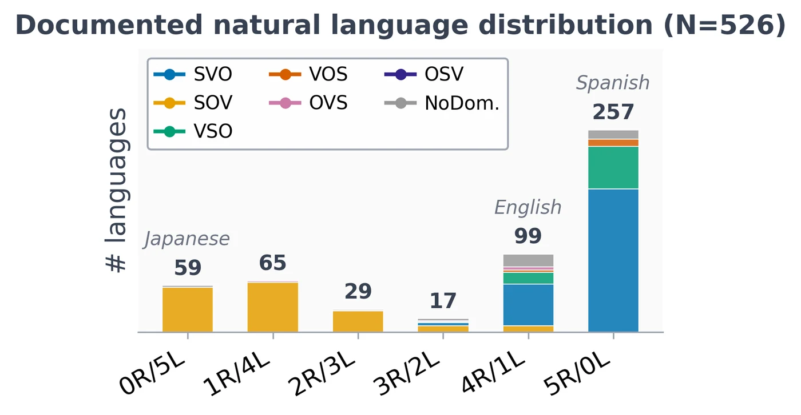
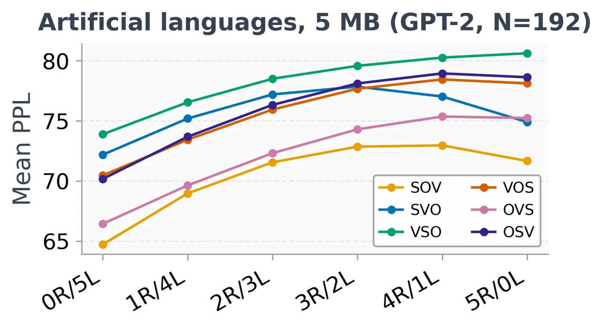
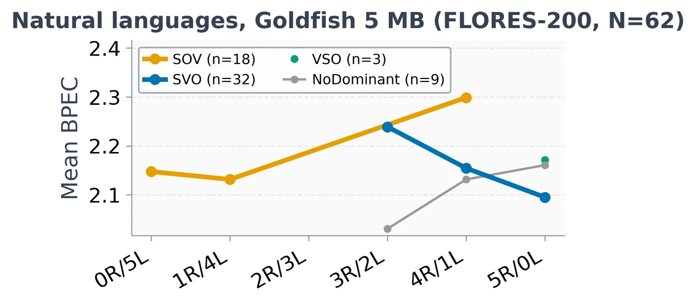
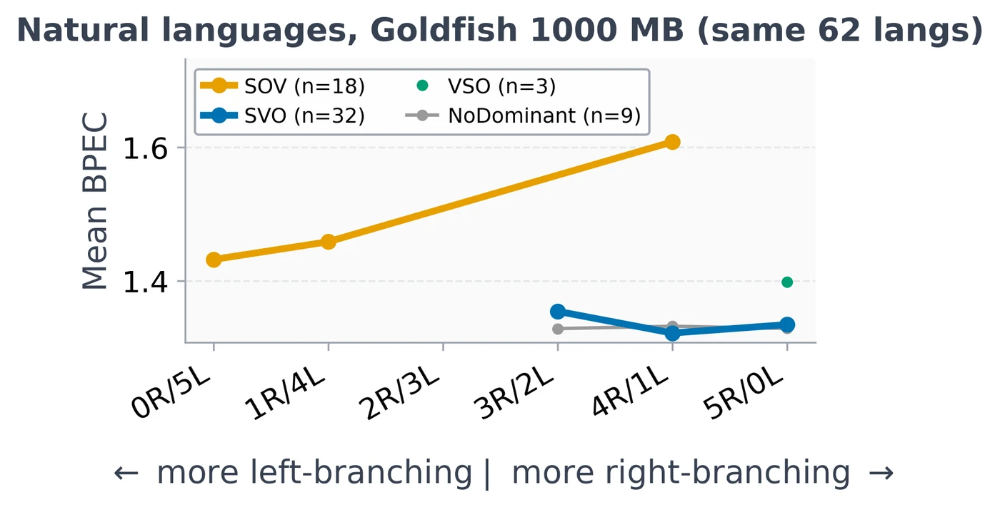

EMNLP 2026 · Oral
Left-Branching Transformers Excel at Right-Branching Languages
Data Shapes Word Order Preferences in Language Models
TU Wien · Northeastern University
Oral presentation: 25 October 2026, 11:00–12:30, Session 2, room G15–16.
In short
Do language models handle all word orders equally well, and if not, do their preferences come from the architecture or from the data? We train the same GPT-2 architecture on 192 artificial languages that differ only in word order, and on more than 70 typologically diverse natural languages at matched data sizes. The two settings point in opposite directions: the architecture prefers left-branching, but with enough data, better-resourced right-branching SVO languages become easiest.
Results
1 · What languages do

2 · What LMs prefer on artificial languages

3 · What LMs prefer on natural languages


Takeaways
- Systematic, but not human-like. On artificial languages, LMs prefer left-branching regardless of base order, against the word order correlations found in natural languages.
- Data overrides the architectural bias. On natural languages at scale, better-resourced SVO languages become easiest, in monolingual and multilingual models.
- Artificial and natural results go in opposite directions. SVO is the hardest base order on artificial languages and the easiest on natural ones.
Even monolingual models trained on just 1 GB develop the SVO preference; frontier models, with far larger resource gaps between languages, likely amplify it. This is a precondition for silent typological homogenisation: languages with flexible word order drifting towards the dominant ones.
Citation
@inproceedings{arzt2026leftbranching,
title = {Left-Branching Transformers Excel at Right-Branching Languages:
Data Shapes Word Order Preferences in Language Models},
author = {Arzt, Varvara and Hanbury, Allan and Blevins, Terra},
booktitle = {Proceedings of the 2026 Conference on Empirical Methods
in Natural Language Processing},
year = {2026}
}